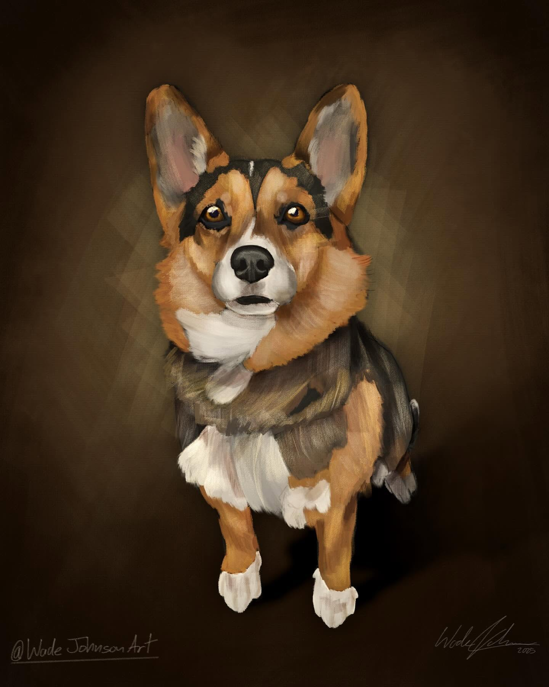
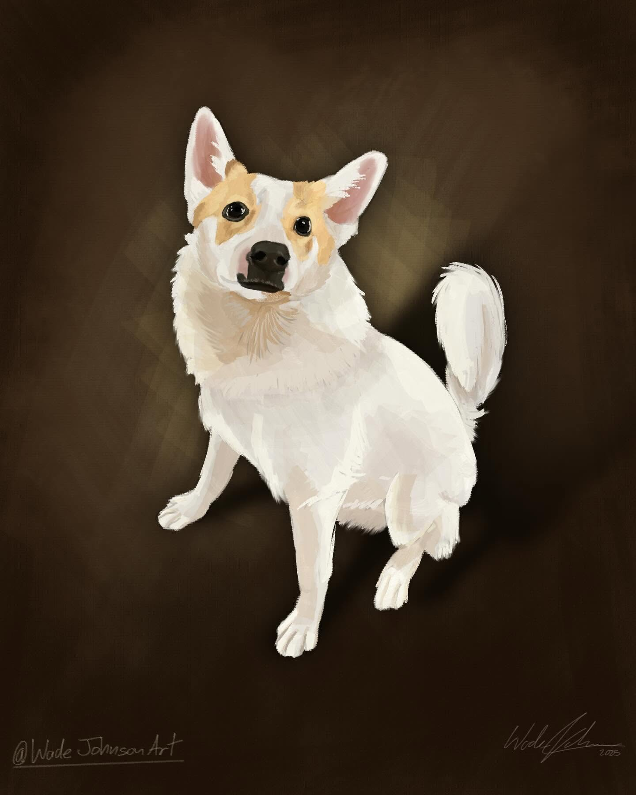

Pet Portrait Commissions
Every pet has a personality worth celebrating. Explore Wade's different portrait styles, from playful character illustrations to classic painted portraits and imaginative fantasy interpretations. Each piece is created with its own character and charm.
Toon Portraits
A playful interpretation of your pet's personality, with bold shapes, expressive faces, and a characterful illustrated look.
 ORIGINAL IMAGE AWAITING UPLOAD
ORIGINAL IMAGE AWAITING UPLOAD ORIGINAL IMAGE AWAITING UPLOAD
ORIGINAL IMAGE AWAITING UPLOAD ORIGINAL IMAGE AWAITING UPLOAD
ORIGINAL IMAGE AWAITING UPLOADPet Portraits
Painted digital portraits that celebrate your pet's distinctive features, expression, and personality.

ORIGINAL IMAGE AWAITING UPLOAD
ORIGINAL IMAGE AWAITING UPLOAD ORIGINAL IMAGE AWAITING UPLOAD
ORIGINAL IMAGE AWAITING UPLOADFantasy Style
For a more imaginative interpretation, Wade brings a pet into a storybook-inspired role, complete with costume and character.
 ORIGINAL IMAGE AWAITING UPLOAD
ORIGINAL IMAGE AWAITING UPLOAD ORIGINAL IMAGE AWAITING UPLOAD
ORIGINAL IMAGE AWAITING UPLOADA Portrait as Unique as Your Pet
Choose the style that fits your companion best, then visit Wade's commission page to inquire about ordering and current availability.
EXPLORE COMMISSIONS ON KO-FI ↗